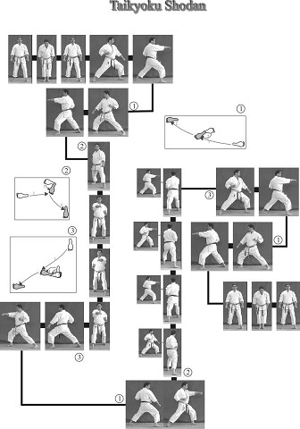
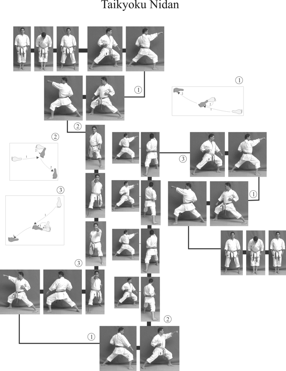

Quando si inizia il percorso nel Karate-Do, la cintura bianca è il punto di partenza.
Sebbene sembri un punto d'inizio, è un momento di grande importanza per comprendere le
basi delle tecniche e dello spirito del Karate. Ecco alcune delle principali tecniche che
ogni principiante dovrebbe imparare:
Taikyoku Shodan

Il Taikyoku Shodan è il primo kata tradizionale insegnato ai principianti. Si compone principalmente di tecniche base come l'Oi Zuki (pugno avanzato) e il Gedan Barai (parata bassa). La struttura semplice del kata, con movimenti eseguiti su linee dritte e angoli a 90°, aiuta lo studente a comprendere direzione, equilibrio e controllo del corpo.
Taikyoku Nidan

Taikyoku Nidan rappresenta un'evoluzione del primo kata, con l'inserimento di tecniche leggermente più complesse, mantenendo comunque la stessa struttura. L’obiettivo è rafforzare la coordinazione tra respirazione e movimento, affinando al tempo stesso postura e ritmo d’esecuzione nelle tecniche di attacco e difesa.
Taikyoku Sandan

Il Taikyoku Sandan introduce variazioni nei colpi rispetto ai kata precedenti. I praticanti devono eseguire le tecniche con maggiore intensità, migliorando fluidità e precisione. Questo kata consolida le basi del kihon (tecniche fondamentali), preparando il karateka ad affrontare kata più complessi con sicurezza.
Kihon Ippon
Il Kihon Ippon Kumite è una forma di combattimento prestabilito dove uno studente attacca e l'altro si difende e contrattacca. Questo esercizio serve a sviluppare riflessi, tempismo e distanza corretta. Ogni attacco è preceduto da un kihon (tecnica base), rendendo l’allenamento fondamentale per la transizione al kumite libero.
Sanbon
Nel Sanbon Kumite, le tecniche si eseguono in sequenze da tre attacchi, alternando difesa e risposta. Questo esercizio rinforza la continuità e il ritmo, oltre a stimolare il controllo dell’energia e della distanza. È ideale per migliorare la fluidità nei movimenti e la consapevolezza del corpo durante lo scontro.
Gohon
Il Gohon Kumite prevede cinque attacchi consecutivi da parte di un praticante, seguiti da cinque difese e contrattacchi da parte dell’altro. Questo metodo allena la resistenza mentale e fisica, rinforza la stabilità delle posizioni e affina l’uso delle tecniche di base, fondamentali nelle fasi iniziali dell’apprendimento.
Le Tecniche Fondamentali per la Cintura Bianca
Quando si inizia il percorso nel Karate-Do, la cintura bianca è il punto di partenza.
Sebbene sembri un punto d'inizio, è un momento di grande importanza per comprendere le
basi delle tecniche e dello spirito del Karate. Ecco alcune delle principali tecniche che
ogni principiante dovrebbe imparare:
- Chudan Zuki - Un pugno frontale al livello del torso, fondamentale per imparare la potenza del colpo.
- Gedan Barai - Un movimento di parata basso per difendersi da attacchi alla zona inferiore del corpo.
- Oizuki - Un pugno avanzato che insegna a combinare attacco e movimento in un unico gesto fluido.
- Age Uke - Una parata verso l'alto che protegge la testa e il collo da eventuali colpi alti.
Queste tecniche non solo migliorano la postura e il controllo del corpo, ma sono anche
fondamentali per la disciplina mentale e il rispetto verso gli altri praticanti.